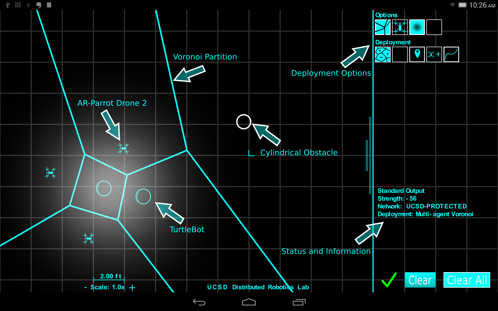

About the App
The MURO lab utilizes an android tablet application as a tool for human-swarm interactions. Our android application uses ROS (Robot Operating System) in order to communicate each of the active robots in the multi-agent network.
Applications for the App
The user can use the android application to easily communicate and command a swarm of robots with the touch of a finger.
Time-varying density function and deployment
We programmed the app so that the user will be able to select a group of agents and define a time-varying density function. The application sends commands that utilize our algorithm [insert time-varying deployment algorithm] for the agents to execute. The algorithm[insert time varying density function algorithm link here] provides a distributed, flexible means of transporting a swarm of robots from point A to point B while avoiding obstacles along the way.
 Tablet displaying the android app in use with multiple agents, Voronoi Partition, Deployment Options, and Obstacle.Obstacle Avoidance
The application provides an easy way to test algorithms. One feature of the application is the ability to add virtual obstacles for the agents to avoid.Simulation
Before real life implementation, having a simulation of our algorithms is convenient. The android app provides an easy way to add virtual robots (turtlebots or quadcopters) that are able to execute deployment algorithms alongside real-life agents or on their own.
Visualization
Sometimes multi-agent deployment algorithms can become complicated. See the robots in real life is a good way to see the motivation behind some of the algorithms. Having the android application provides an additional mean of visualizing deployment aglorithms by printing on screen trajectories, voronoi cells, obstacles and walls (to be implemented).